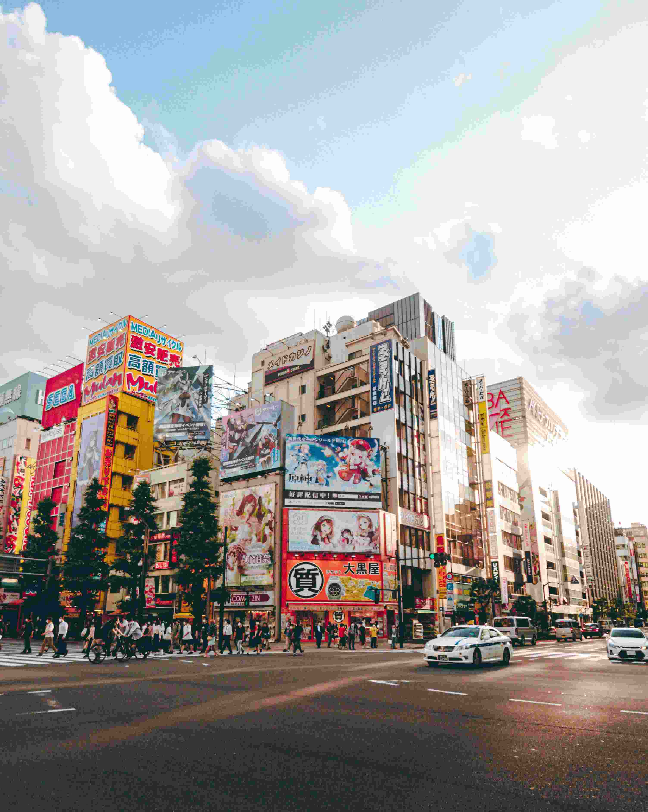
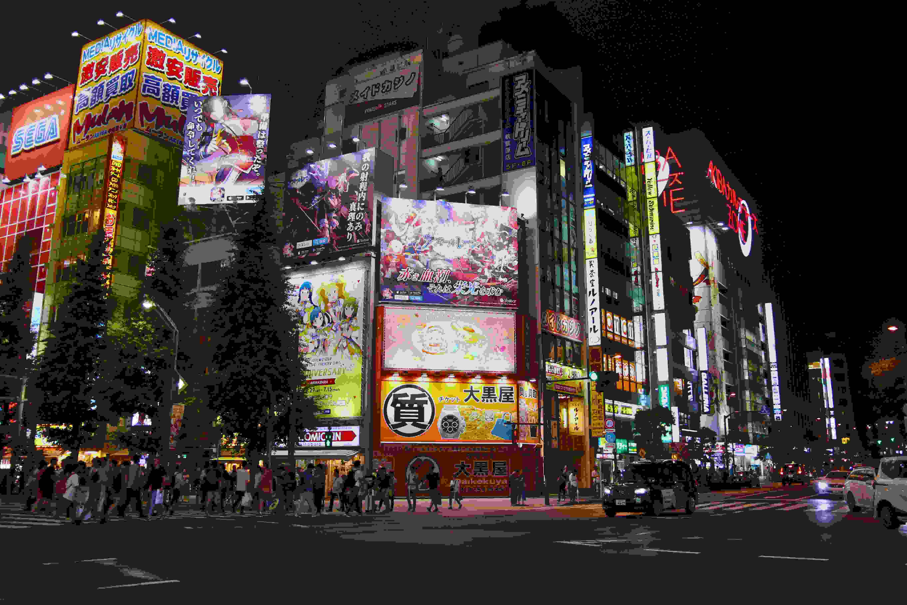
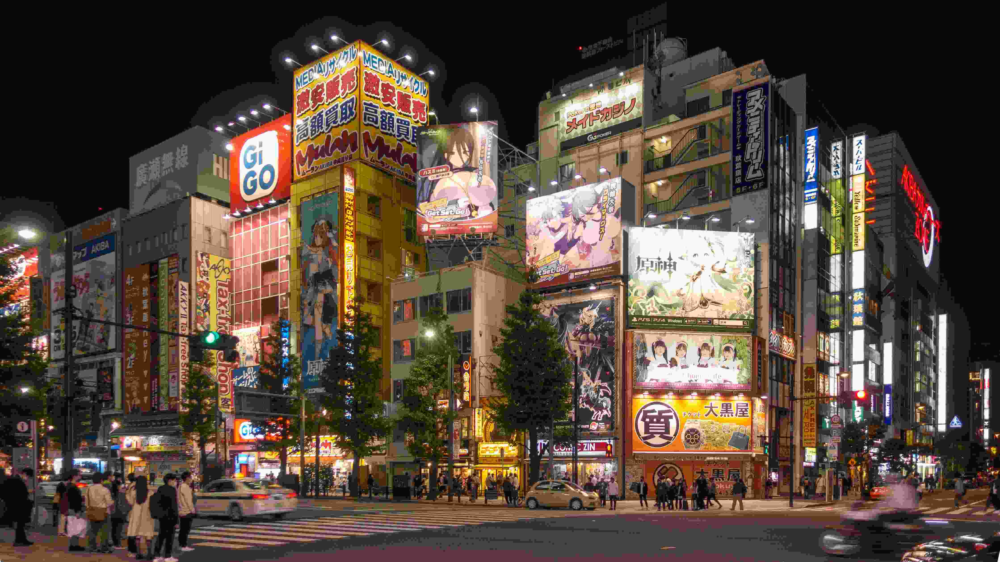
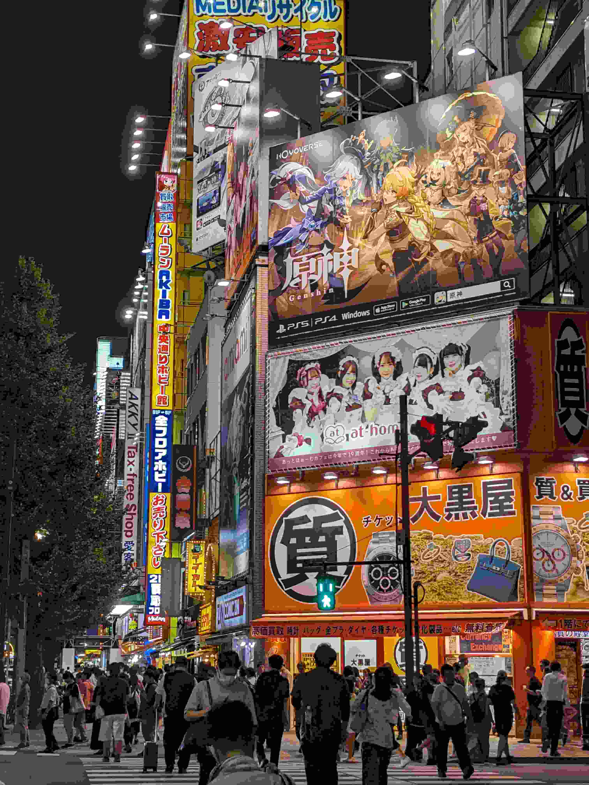
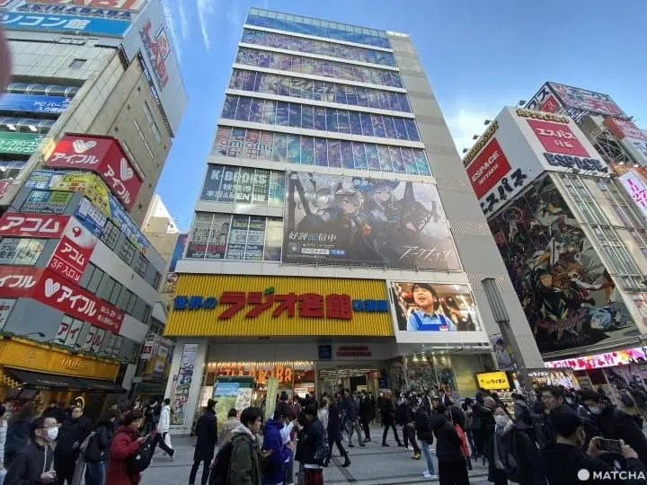

夢幻漾萌街，漫享秋葉原。



舊街賣電器，今街贈萌趣
「秋葉原」這個地名本身，就帶著一層傳奇色彩。1869年明治初年，神田一帶大火後，東京府為防火開闢空地、興建祭祀火神的「鎮火社」，民眾口耳相傳將其附會為靜岡的火防神「秋葉大權現」，這片原野因此被叫做「秋葉之原」；1888年鐵道通到此地，車站便定名「秋葉原」，將錯就錯了百餘年。 1945年二戰後，日本百廢待興，為了謀生，許多人在秋葉原高架橋下聚集，販售收音機零件與軍用物資。 1951年，日本政府為了統一管理，出台《攤販整理條令》，將攤販集中到固定區域，使其正規化，這為後續電器街的出現奠定了基礎。隨後日本進入經濟高速成長期，民眾消費力提升，採購需求從「自行購買零件組裝」轉向「直接入手成品家電」，原本深耕電子領域的商戶順勢轉型。1981年日本政府針對入境遊客推出免稅政策，秋葉原由此從國內集散地，躍升為全球知名的「電器街」。 然而1989年全球石油危機衝擊經濟，傳統家電市場飽和，銷售遭遇瓶頸。此時個人電腦產業悄然興起，T-ZONE、Sofmap等專營賣場紛紛進駐，填補了市場缺口。到了1994年，秋葉原電腦相關產品的銷售額首次超越傳統家電，「電腦街」成為新標籤。而這批為了組裝電腦頻繁出入的「發燒友」，其對數位技術的鑽研熱情，後來自然延伸到了遊戲、動畫等領域，成為支撐日後御宅文化的核心族群。 受消費文化驅動，秋葉原的業態迎來質變。2001年，首家常態化女僕咖啡廳「Cure Maid Café」開業，填補了街區休憩空白，「萌」系文化正式從螢幕走向街頭。2005年更為關鍵：AKB48專屬劇場落地，將偶像文化深植此地；同年電影《電車男》熱映，成功打破大眾對御宅族的刻板印象，推動秋葉原從小眾聚落躍升為大眾潮流聖地。 此後的十餘年裡，扭蛋專營店、主題周邊店、電競體驗館陸續湧現，ACGN產業鏈越來越完善，甚至成為日本「Cool Japan」戰略的代表性符號，每年吸引數百萬全球遊客來此朝聖。如今的秋葉原，早已沒了當年賣收音機零件的攤販痕跡，取而代之的是滿街的萌系霓虹、琳琅滿目的手辦周邊——當年那群發燒友的熱愛，最終把這條老街變成了全球ACGN愛好者的「夢幻聖地」。
秋葉原無線電會館

——想盡情享受秋葉原的魅力，初次到訪，不妨到秋葉原無線電會館。
來到滿街都是動漫商店的秋葉原，面對鱗次櫛比的招牌、密密麻麻的樓宇，第一次到訪的旅客最常問的就是：「到底該從哪裡開始逛起？」 答案很簡單——JR秋葉原站「電器街口」一出閘門，斜前方那棟掛著霓虹黃招牌的十層大樓，就是你的朝聖起點。 它叫「秋葉原無線電會館」。
一棟樓，就是一部秋葉原進化史
無線電會館1950年開業，名稱中的「ラジオ」（無線電）一詞，在過去曾泛指所有的電器設備。這棟樓見證了秋葉原從「無線電街」到「電器街」的輝煌年代——在動漫文化興盛之前，裡頭聚集的店家販賣各式各樣的電器商品。 隨著時代變遷，這裡逐漸由經營集換式卡牌、模型、漫畫等店鋪取代。目前的建築是於2014年重建完成的樣貌，館內商鋪以經營動漫相關商品為大宗。
垂直迷宮：一層一個宇宙
無線電會館的妙處在於：它把秋葉原最核心的業態，壓縮進了一棟樓裡。從1樓到8樓，每一層都是一個獨立的小宇宙。以下這份「樓層導覽」，請你收藏好：
🎁 1樓｜動漫伴手禮
進門左手邊就是「GIFT SHOP The AkiBa」，餅乾零食、T-Shirt、紀念精品全搭上了動漫元素。即使你不是御宅族，也能在這裡找到驚奇的小禮物帶回家。
🏬 2樓｜格子鋪挖寶
這層由數家小型店鋪組成，最好逛的是格子商店「アストップ」，以人物公仔模型為大宗。秋葉原的格子鋪數量不少，時間充足的話可以好好比價。
📚 3樓｜K-BOOKS（中古動漫聖地）
整層都是知名的動漫商品店「K-BOOKS」秋葉原店，主要經營二手動漫商品買賣。店家會將收購的商品仔細檢查保存情況再標價販賣，因此會看到同一商品有不同價格的情況——選購時仔細檢查，往往能挖到寶。
🎎 4樓｜amiami（新品模型天堂）
整層都是「amiami」，販賣模型、動漫角色周邊商品、卡牌遊戲和各式角色公仔，每個商品架都有作品名稱區別，找喜歡的作品周邊並不困難。
🌟 5樓｜偶像周邊專區
其中的「TRIO」主打各式各樣的偶像周邊商品，以近年流行的偶像團體商品種類較多，包含官方相片、海報、書籍、T-Shirt、演唱會螢光棒等。
🃏 6樓｜Yellow Submarine
這層最主打的商品是集換式卡牌和桌上遊戲，各種類型的卡牌、桌遊本體、遊戲配件、相關規則書等應有盡有——喜歡桌遊的遊客一定不能錯過。
🎀 7樓｜Azone Labelshop
販賣15公分~50公分大小的精緻人偶，除了人偶本體外，也販賣各式各樣的人偶衣服、小配件等。
💎 8樓｜Dollfie Dream專門店
販賣40公分~60公分的大型「Dollfie Dream」人偶，除了商品也有各種組裝好的人偶展示空間給遊客拍照。除了原創商品，也有結合動漫角色的仿製人偶。
會館資訊
Tips:由於樓層内容較多，建議游客預留至少半天時間游玩。
- 📍 地址
- 🚃 交通
- 🕙 營業時間
- 🎌 公休日
東京都千代田區外神田1-15-16
JR秋葉原站「電器街口」步行即達
10:00-20:00（各店鋪可能有所差異，建議以官方最新公告為准）
全年無休 （每年6月法定檢修日除外）